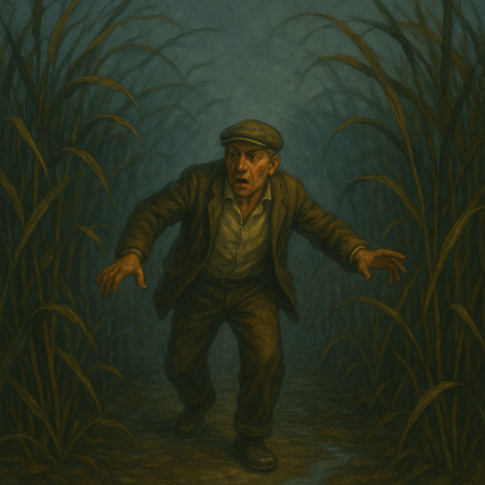
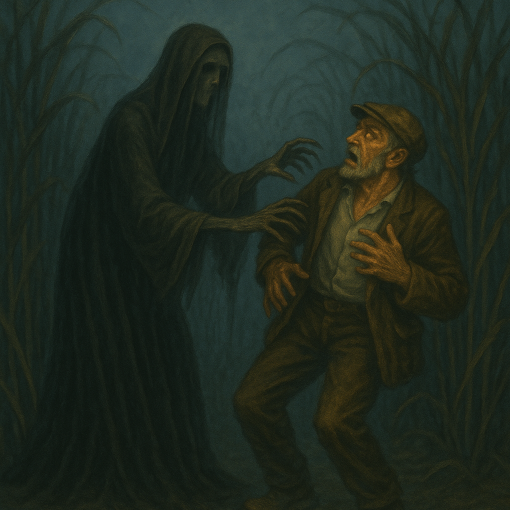
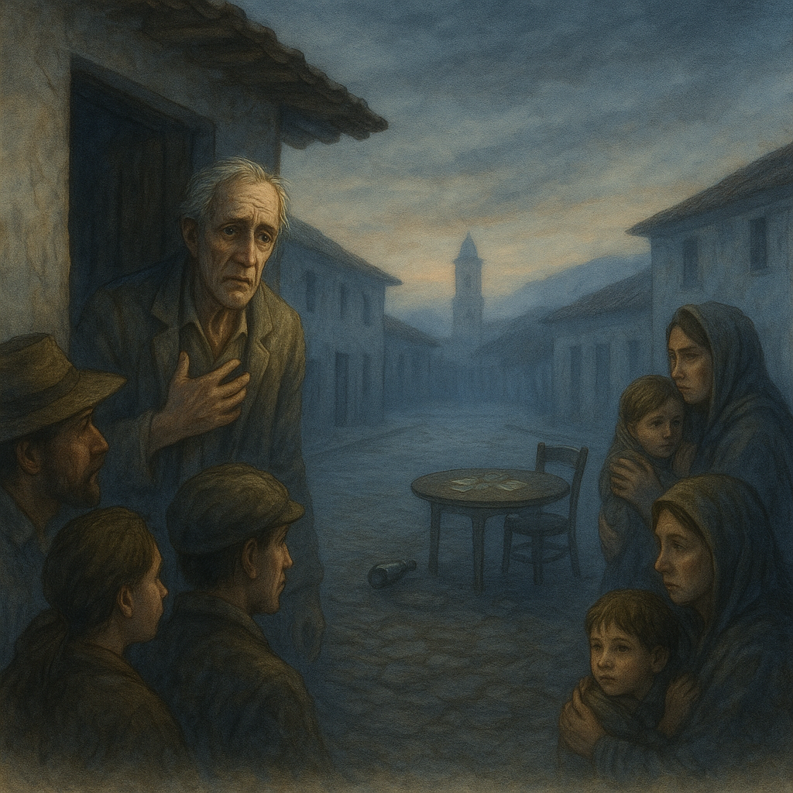

CUENTOS DE
NUESTRA COMUNIDAD
CARRERA DE PEDAGOGÍA DE LAS CIENCIAS EXPERIMENTALES INFORMÁTICA

Unidad Educativa
"Rafael Rodríguez Palacios"
Unidad Educativa
"Rafael Rodríguez Palacios"

En la parroquia de Malacatos, específicamente en el centro del pueblo, se conserva entre sus habitantes una historia antigua y sobrecogedora que se cuenta de generación en generación. Dicen que, hace ya varias décadas, un grupo de hombres de avanzada edad tenía la costumbre de reunirse todas las noches en una acera frente a la plaza central para jugar baraja. Lo hacían a la luz de un viejo farol de queroseno, que proyectaba sombras alargadas y temblorosas sobre las paredes de las casas coloniales. El ambiente se llenaba de risas, bromas pesadas y, por supuesto, el inconfundible olor del aguardiente local, que corría de mano en mano. Nadie se preocupaba demasiado por la hora: jugaban hasta bien entrada la madrugada, cuando el frío serrano se hacía más intenso y la bruma cubría los caminos empedrados.

Cuentan que, al dispersarse cada noche, muchos de ellos experimentaban una sensación extraña: un escalofrío profundo y la clara impresión de que alguien —o algo— los seguía en silencio. Algunos decían que oían pasos sobre las hojas secas, otros aseguraban haber visto sombras que se desvanecían al voltear. Pero una noche, uno de ellos, conocido por su afición a la bebida más que por su prudencia, salió del grupo visiblemente ebrio. Decidió tomar un atajo entre un cañaveral cercano para llegar más rápido a su casa. El viento agitaba las cañas, haciendo que sus hojas secas sonaran como cuchillas, y la niebla espesa formaba figuras inquietantes. Mientras avanzaba, empezó a sentir que el suelo se desvanecía bajo sus pies. Miró alrededor y se dio cuenta, horrorizado, de que ya no caminaba: estaba flotando, suspendido a un metro del suelo entre los cañaverales.

Aterrado, sintió que una figura femenina vestida de negro, con un velo cubriéndole el rostro, emergía de entre las cañas.
Sus manos delgadas y huesudas parecían querer aferrarlo para arrastrarlo consigo. Dicen que tenía ojos vacíos, profundos como pozos.
Fue entonces cuando, en un último intento desesperado, el hombre gritó:
—¡Ayúdame, Virgencita!
En el mismo instante, cayó pesadamente sobre el suelo del cañaveral, golpeándose el costado y rompiendo el silencio con el sonido de las hojas quebrándose.
Aturdido y tembloroso, logró arrastrarse fuera de allí.

A la mañana siguiente llegó a su casa pálido como un cadáver. Contó a sus vecinos lo ocurrido con voz quebrada, asegurando que había visto a “La Luterana”. Según la leyenda, esta aparición se manifestaba a quienes tenían vicios como el juego y el alcohol, especialmente si se entregaban a ellos durante las horas en que la noche pertenece a los espíritus. Muchos ancianos del pueblo afirman que La Luterana es un ánima en pena que fue en vida una mujer piadosa pero severa, que detestaba los vicios y murió con la promesa de castigar a quienes se apartaran del buen camino. Otros dicen que es un espíritu maligno que se disfraza de moralista para atrapar a los incautos.

Desde aquella noche, cuentan que los juegos de baraja al aire libre se acabaron. El miedo se apoderó del grupo, y las familias empezaron a advertir a sus hijos sobre los peligros de salir hasta tarde. Aun hoy, se murmura que quien ose retar la noche con vicios o insolencias podría encontrarse, en medio de la bruma o entre los cañaverales, con la mirada vacía y el frío mortal de La Luterana. Aunque muchos afirman que la aparición no se ha visto desde entonces, su historia persiste como un recordatorio inquietante en la memoria colectiva de Malacatos.